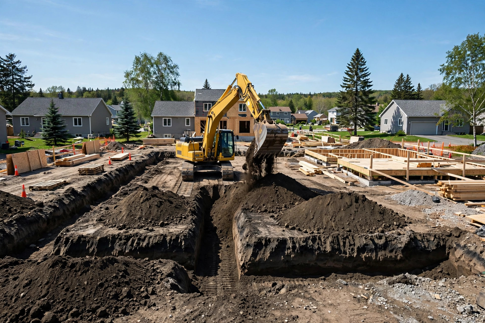
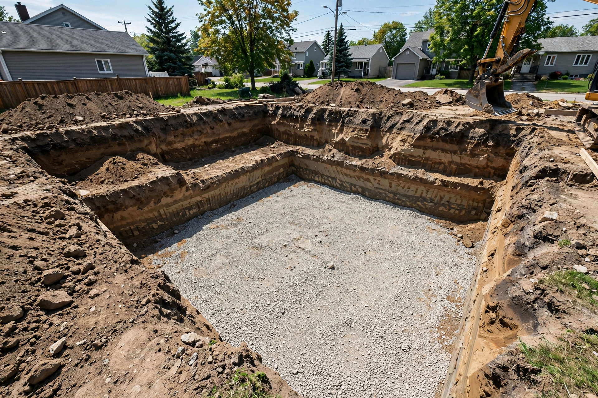
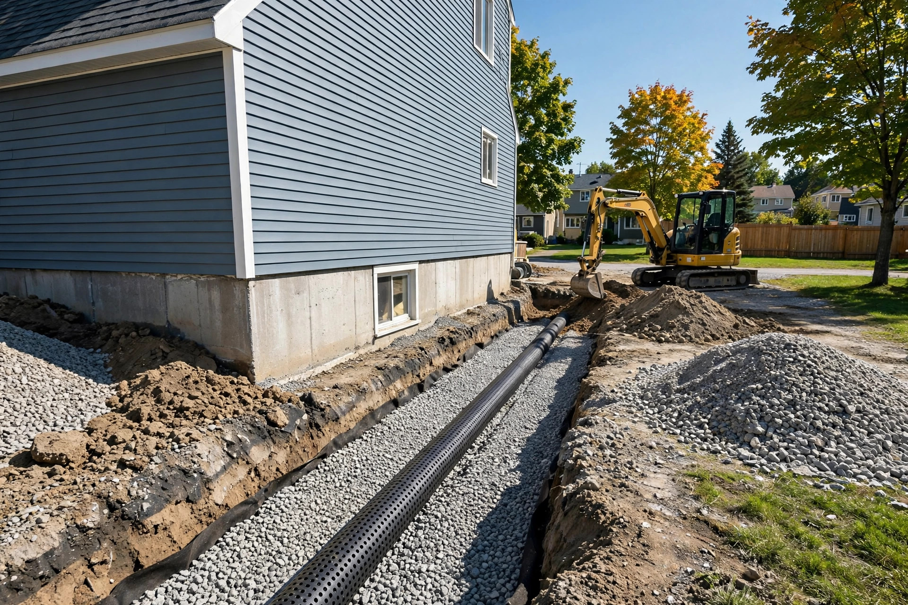
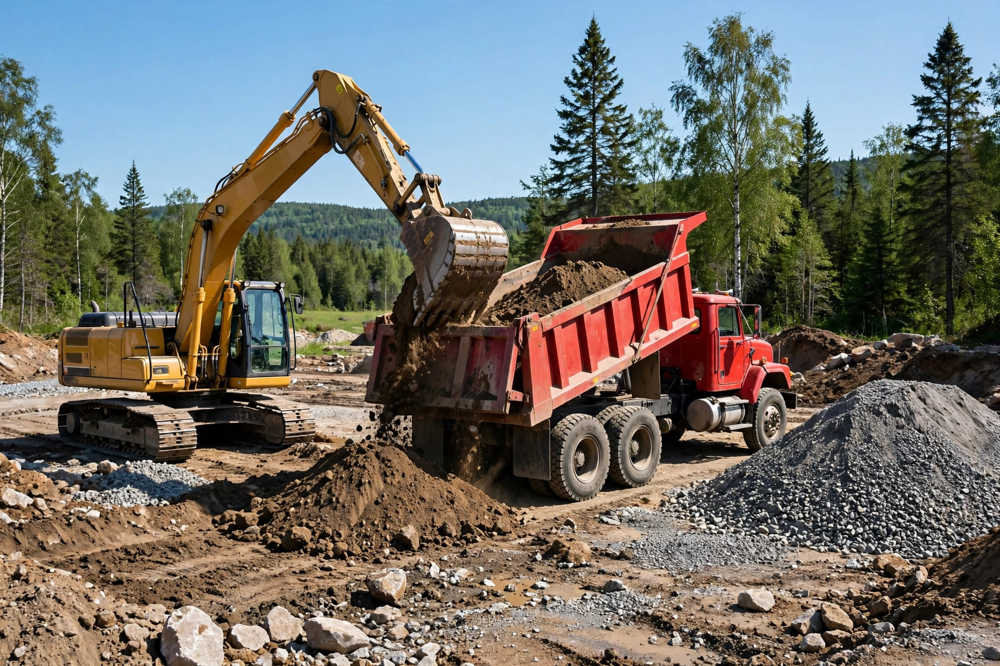

Excavation
Excavation de fondations et de terrains pour projets résidentiels et commerciaux.

Saint-Jean-sur-Richelieu, Québec · Excavation et terrassement
Excavation, terrassement et transport en vrac à Saint-Jean-sur-Richelieu — résidentiel et commercial. Un travail honnête, expliqué clairement, fait du premier coup.
Ce que nous faisons
Excavation de fondations et de terrains pour projets résidentiels et commerciaux.
Nivellement et préparation de terrain pour vos constructions et aménagements.
Livraison de terre, sable et gravier en vrac, directement sur votre chantier.
Démolition et dégagement de structures avant vos travaux d'excavation.
Travaux de rénovation liés à l'excavation et au terrassement de votre propriété.
Des petits chantiers résidentiels aux projets commerciaux — même rigueur partout.

Pourquoi nous choisir
On croit aux choses simples : un chantier bien préparé, un prix expliqué d'avance et un travail garanti. Vous savez exactement ce qui sera fait — et combien ça coûte.
Nos chantiers


Ils en parlent
« Super belle job, rapide efficace et dans les prix »
Bon à savoir
Excavation, terrassement, transport en vrac (terre, sable, gravier), démolition et rénovation — pour les projets résidentiels et commerciaux.
Appelez-nous au (450) 347-1310 pendant nos heures d'ouverture — on discute de votre projet et on vous remet une soumission claire.
Oui — René L Bonneau & Fils Inc détient la licence RBQ 1362-3665-73.
Lundi au vendredi de 9 h à 18 h. Fermé le samedi et le dimanche.
Venez nous voir